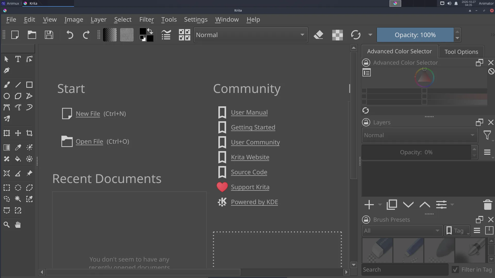

| Krita | |
|---|---|
| Menu | 2D Graphics → Bitmap Editors → Krita |
| Version | 5.3.4.1 |
| Command | krita |
| Good for | Beginner to professional |
| Files | .kra; PSD, PNG, JPEG, EXR, TIFF; renders animation to video |
| Licence | GPL-3.0 |
| Website | krita.org |
Krita is made by artists for painting: concept art, character design, backgrounds, textures, comics and storyboards. It also has a complete animation workspace for hand-drawn animation with brushes.


Start painting#
- File → New → choose a size (for film: 1920 × 1080, 300 dpi for print) → Create.
- Pick a brush in Brush Presets (right), a colour in the Advanced Color Selector.
- Paint. [ ] change brush size, E switches to eraser mode, Ctrl+Z undoes.
- Add layers with Insert, or the + in the Layers panel. Keep sketch, line art and colour on separate layers.
- File → Save as
.kra(keeps layers); File → Export to PNG or JPEG.
Animation#
- Window → Workspace → Animation. The Timeline and Animation panels appear.
- Draw on frame 0. In the timeline, click the next frame, right-click → Create Blank Frame, and draw.
- Onion Skins panel: see the frames before and after.
- Set the frame rate and start/end in the Animation panel; press Play.
- File → Render Animation: choose Video (MP4, uses FFmpeg) or Image Sequence.
Drawing tablets#
Pressure works out of the box. Tune it in Settings → Configure Krita → Tablet settings (pressure curve). If the cursor is offset on a multi-monitor setup, set the tablet's area in Krita's tablet settings.
Colour management#
Settings → Configure Krita → Color Management selects the screen profile and OCIO configuration; important when you paint textures or matte paintings for 3D.
Learn more#
- Krita manual: https://docs.krita.org/
- Tutorial on this guide: Paint an animation in Krita